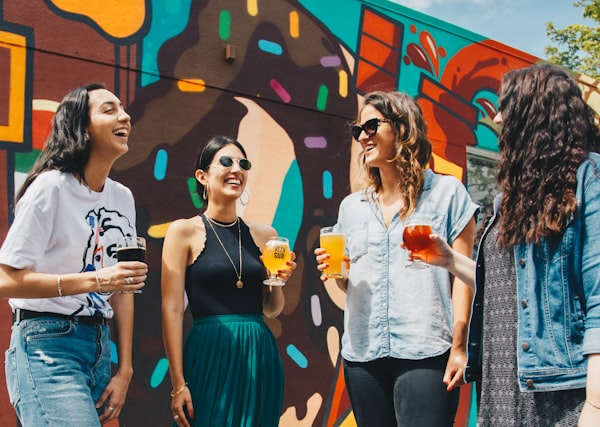
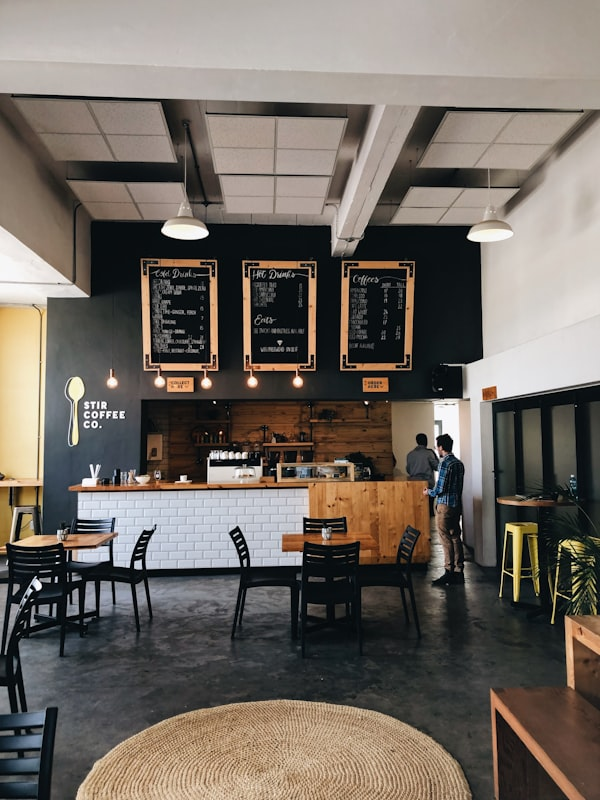
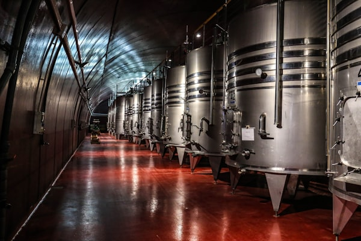
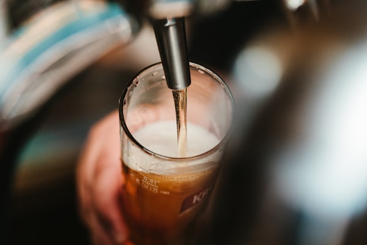
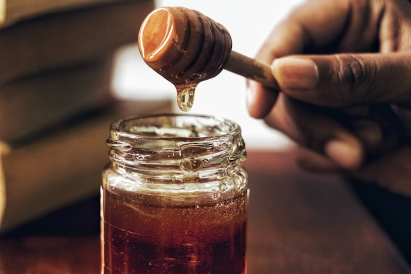

What's On Tap
From hazy IPAs to barrel-aged stouts � explore the full lineup of what's brewing, pouring, and ready for you to discover.

Haven Hazy
New England IPA � 7.2% ABV
On Tap NowPopularity � 75% of pints ordered
Rotating Taps
Core Flagships
Seasonal Rotations
Barrel Program
Flagship Beers
These are the beers that define us � brewed year-round, perfected over time, and poured with pride every single day.

Haven Hazy
New England IPA
Triple dry-hopped with Citra, Mosaic, and Simcoe. Bursting with passionfruit, mango, and a pillowy smooth finish.

Iron Forge Stout
Imperial Milk Stout
Rich, dark, and decadent. Brewed with local artisan coffee beans and organic cacao nibs for a velvety finish.

Timberline Crisp
German Pilsner
Crisp, clean, and endlessly refreshing. Delicate floral noble hop aroma with a dry, biscuity finish that keeps you coming back.
Seasonal Rotations
These beers chase the seasons. Available for a short window � when they're gone, they're gone until next year.
Cherry Tart
5.4%Kettle Sour
Montmorency cherries meet vanilla bean in this brilliantly tart and fruity sour ale. Bright pink hue, crisp acidity, and a subtly sweet finish.
Smoked Porter
6.5%Smoked Ale
Beechwood-smoked malt delivers an unmistakable campfire character. Layered with dark chocolate, toasted oak, and a whisper of bourbon vanilla.
Barrel-Aged Program
Time, wood, and patience. Our barrel program pushes the boundaries of what beer can become.
Bourbon Barrel Imperial Porter
Aged 14 months in Kentucky bourbon barrels. Notes of vanilla, dark fruit, and toasted oak. 11.2% ABV.
Limited � 500 bottlesWine Barrel Wild Ale
Fermented in Pinot Noir barrels with native yeasts. Bright acidity with layers of berry and oak. 7.8% ABV.
Limited � 300 bottlesRye Barrel Barleywine
18 months in rye whiskey barrels. Rich, complex, and warming with dark caramel and spice. 13.5% ABV.
Limited � 400 bottlesUnderstanding Your Beer
Alcohol by Volume
The percentage of alcohol in your beer. Lower ABV (4-5%) means sessionable; higher (7%+) means sipping.
International Bitterness Units
Measures hop bitterness. Gentle (10-20 IBU) to bold (60+ IBU). Our hazy IPAs sit around 65 for a balanced bite.
Standard Reference Method
Color scale from pale straw (2) to midnight black (40+). The darker the beer, the richer the roasted malt flavor.

Come Taste the Lineup
Our tap list changes weekly. Stop by to see what's fresh off the fermentation tanks.